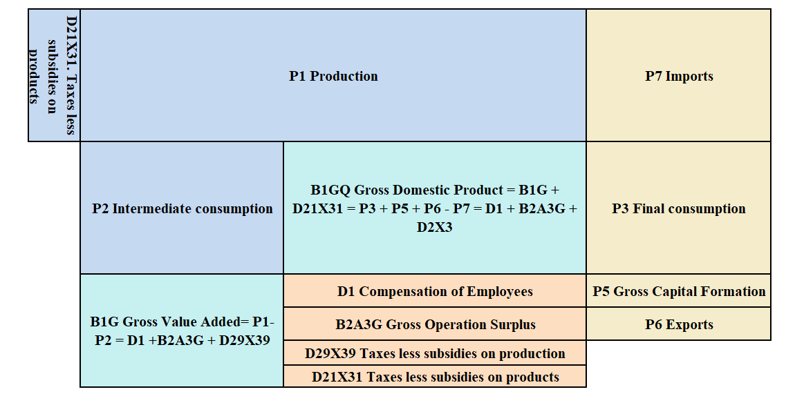
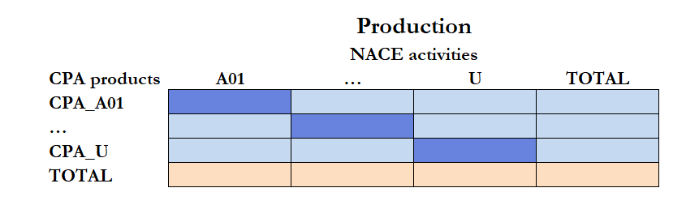
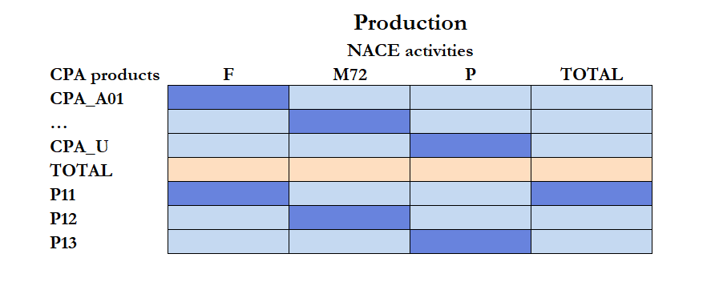

A user guide to NAMA and SUT
Introduction
This short guide is intended as a basic reference to understand the basics of National Accounts Main Aggregates (NAMA) and Supply and Use Tables (SUT) and the close interrelationships between the two from a practical point of view. We will omit some technical details and will provide just a practical overview. Both set of accounts describe the production, expenditure and income flows of an economy in a consistent way but using a different approach. We will not deal here with other parts of the National Accounts (sector accounts, financial accounts) although some reference to concepts like sectors and institutional units will need to be made. On the other hand, we will talk about classifications, codes and other practical aspects of the ESA 2010 transmission programme that are necessary for understanding the context and the practical use of the tables.
It is mainly intended with people with some familiarity with National Accounts that want to have a general understanding of the main variables and concepts used in both areas and how they relate to each other.
Overview
Figure 1 provides a synoptic overview of the main flows captured in NAMA and SUT including very well-known transactions as Gross Domestic Product. These are the three approaches to GDP present in table 1 of the ESA transmission programme:
Output: \[B1GQ = B1G + D21X31 \tag{1}\]
Expenditure: \[B1GQ = P3 + P5 + P6 + P7 \tag{2}\]
Income: \[B1GQ = D1 + B2A3G + D2X3 \tag{3}\]

They are presented slightly different in Figure 1. For example, Table 1 of the ESA does not show separately P1 and P2 but directly B1G, but P1 and P2 are included in table 3 of the ESA 2010 transmission programme, D2X3 in Table 1 corresponds to the sum of D21X31 from table 1 and D39X39 available in table 3.
If we put together Equation 1 and Equation 2 after replacing B1G by P1 - P2 we obtain Equation 4:
\[P1 - P2 + D21X31 = P3 + P5 + P6 - P7 \tag{4}\]
Making a few changes we obtain the basic SUT equation,Equation 5, total supply should be equal to the total use.
\[P1 + P7 + D21X31 = P2 + P3 + P5 + P6 \tag{5}\]
And the income identity, Equation 6:
\[B1G = D1 + B2A3G + D29X39 \tag{6}\]
From the equations there does not seem to be any substantial difference between NAMA and SUTs. In fact, there are not and that is why it is recommended to derive NAMA from SUTs. However, there are some differences that should be highlighted:
NAMA compilation requirements are more demanding (T+2 months) compared to SUTs (T+3 years).
NAMA has a strong focus on volumes while for SUTs the focus is on current prices (although that is changing).
All SUTs transactions are required to be broken down by the same product classification that makes possible to group at product level all transactions.
Codes, classifications and valuations
Codes
In order to work with national accounts we need to invest some time in understanding the coding system. There will be codes starting by P, D or B. P will refer to the goods and services transactions, D to distributive transactions and B to balancing items. A transaction, like P6, could be further detailed adding codes (P61, P62). This can go, specially in distributive transactions, up to the third/fourth digit (D4432). Luckily for us, in the goods and services accounts we will only have to learn a few codes up to two digits.
In some occasions, especially for dissemination purposes, the sector is added to the transaction. So P3_S13 means final consumption (P3) of the government sector (S13) when it would make sense to group a particular transaction by sector (P3 in our case) but i could be done for many more transactions. The sector can also refer to a geographical area (EU, euro area) so we will find codes like P6_S212 or in some cases the geographical code use used directly and we will find P6_B0.
Classifications
The NACE (industrial classification of economic activities within the European Union) would be the classification we will use more. There are specific aggregations in National Accounts 10, 21, 38, 64 and 88.
The symmetric classification for products is the CPA (Classification of Products by Activity) and the most common aggregation is 64. I called them symmetric because the NACE and CPA are related. Industries in a particular NACE (B) will produce mainly, but not only, products of the counterpart CPA classification (CPA_B). We will see those classifications consistently applied in SUTS but not in NAMA. A particular classification (COICOP) would be used for Household and another one (AN) for GFCF. There are other ones we will not have to use (COFOG, COPNI) but it is recommended to be aware of their existence.
Valuations
Production would be expressed at basic prices, which is the price relevant to the producer. Almost all other transactions will be expressed in purchaser prices, which includes taxes less subsidies on products and trade and transport margins. Exports and imports would be expressed at FOB (Free on Broad1) in NAMA, which can be assumed to be purchaser prices, as they are the values provided by BOP (Balance of Payments). In SUT imports are expressed at CIF (Cost Insurance Freight2) as they are needed by product and therefore provided by FTS (Foreign Trade Statistics3). In SUT, several valuation matrix would be needed to put in basic prices the Use table. This step is needed to compile Input Output tables.
The output approach
The output approach is the basis of the NA system4 even if it is of secondary importance for most users. If you look at a macroeconomics textbook the output approach is mainly ignored. The reason is that government cannot influence so much in the short-medium term the output transactions, but can do so directly in some expenditure transactions (government final consumption) or indirectly (household final consumption through the interest rates).
Production (P1)
Production will be the first transaction we will look into and will be used to illustrate some general characteristics of the NA system.
In NAMA we will compile P1 by economic activity and in the supply table we will compile it additionally by product.

NAMA is the bottom row with the industry totals. In SUT, we will have all the cells. However for some industries there will be only values in the diagonal while in others we will find values outside the diagonal. For example, the main output of a vineyard would be wine but they could also offer accommodation services, wine courses, etc.
We will find also in SUT a dissagregation of P1 by economic activity into market output (P11), output produced for own final use (P12) and non-market output (P.13). The relevance will be different depending on the activity. P12 would be important for NACE activities L68A (Imputed rents of owner-occupied dwellings) and T (Activities of households as employers), because they are produced and consumed by households and activity M72 (Scientific research and development) because includes own accounts capital formation on R&D. P13 would be most output of NACE O, P and Q. Additionally it would provide an idea of the amount of output that is calculated as sum of costs in the economy and the importance of the government sectors in different economic activities.

Transport and trade margins
Something that we omitted in Figure 1 were transport and trade margins because they do not appear in NAMA. Production in NAMA and the supply table are measured in basic prices. That is the price received by the producer. That would be the price a seller in let’s say Amazon receives.
Footnotes
https://www.incotermsexplained.com/the-incoterms-rules/the-eleven-rules-in-brief/free-board/↩︎
https://www.incotermsexplained.com/the-incoterms-rules/the-eleven-rules-in-brief/cost-insurance-freight/↩︎
https://ec.europa.eu/eurostat/documents/3859598/16099239/KS-GQ-22-001-EN-N.pdf/96ccbe2a-a05b-0660-356b-02072c2ada8a?t=1676298298316&download=true↩︎
https://politicalarithmetick.com/2017/04/03/what-the-textbooks-get-wrong-when-they-explain-gdp/↩︎